The Green Bay Packers are an American football team based in Green Bay, Wisconsin at Lambeau Field. Their fanbase is known as the "cheeseheads" due to Wisconsin being the leading producer of cheese in the US. They are one of the oldest teams in NFL history as it was founded in 1919. They boast a trophy cabinet with 4 NFL championships, and have a long-lasting rivalry with the Chicago Bears. Fun fact: they are the only community-owned and non-profit team in the NFL.
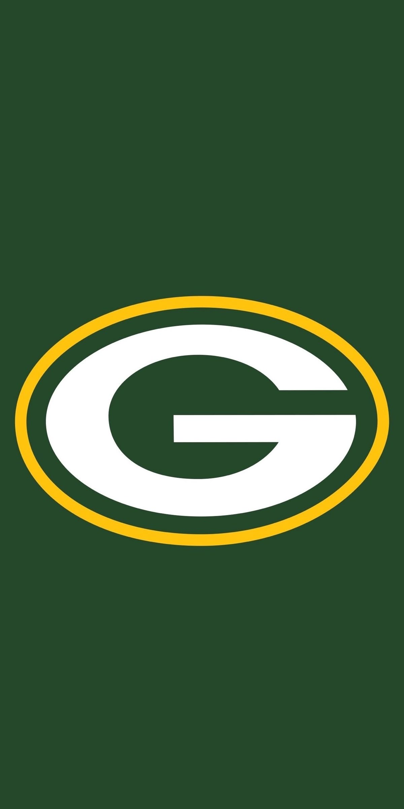
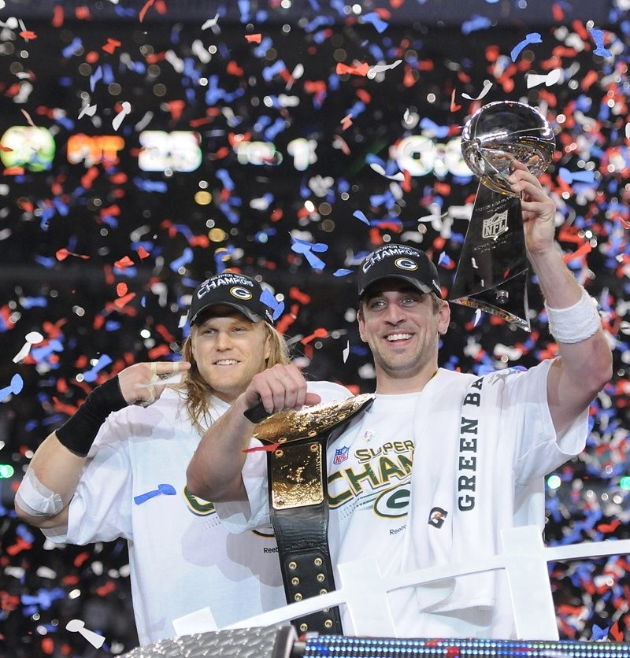
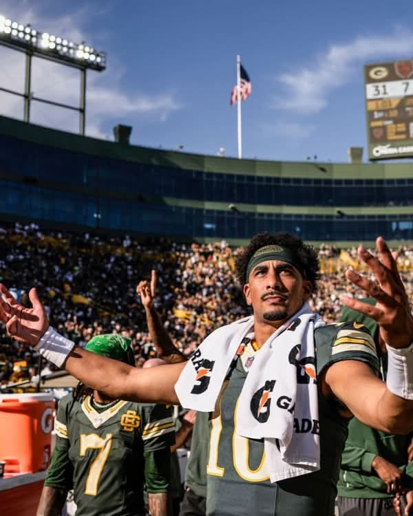
The Philadelphia 76ers are an American basketball team based in Philadelphia, Pennsylvania at the Xfinity Mobile Arena. They are called the 76ers (Sixers for short) due to the US Declaration of Independence being signed in 1776. They have won 3 NBA championships, and have produced 21 hall of famers since their inception. Their biggest rival is the Boston Celtics, and their mascot is Franklin the Dog.
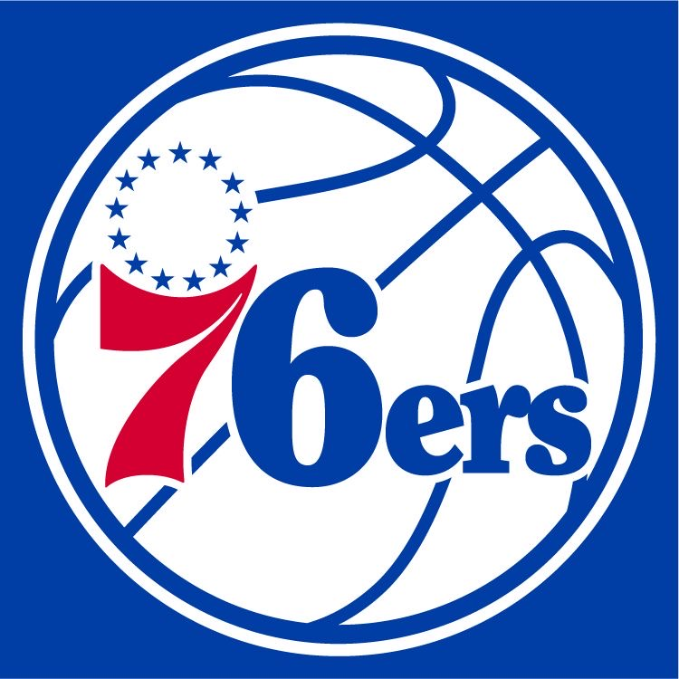
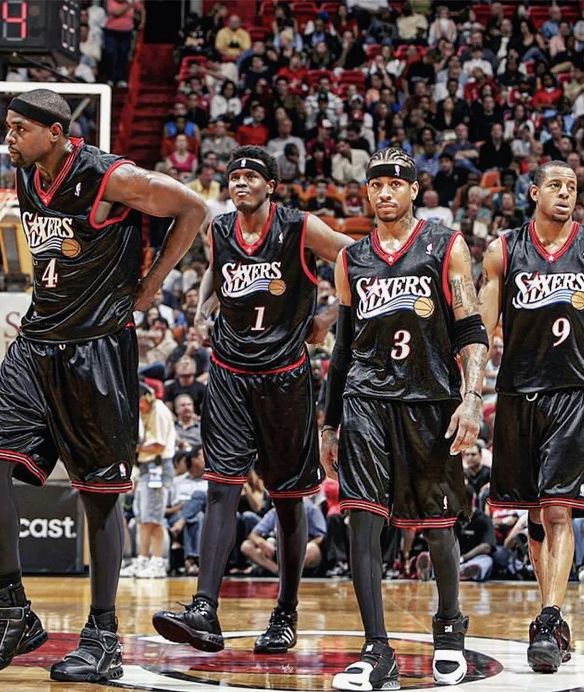
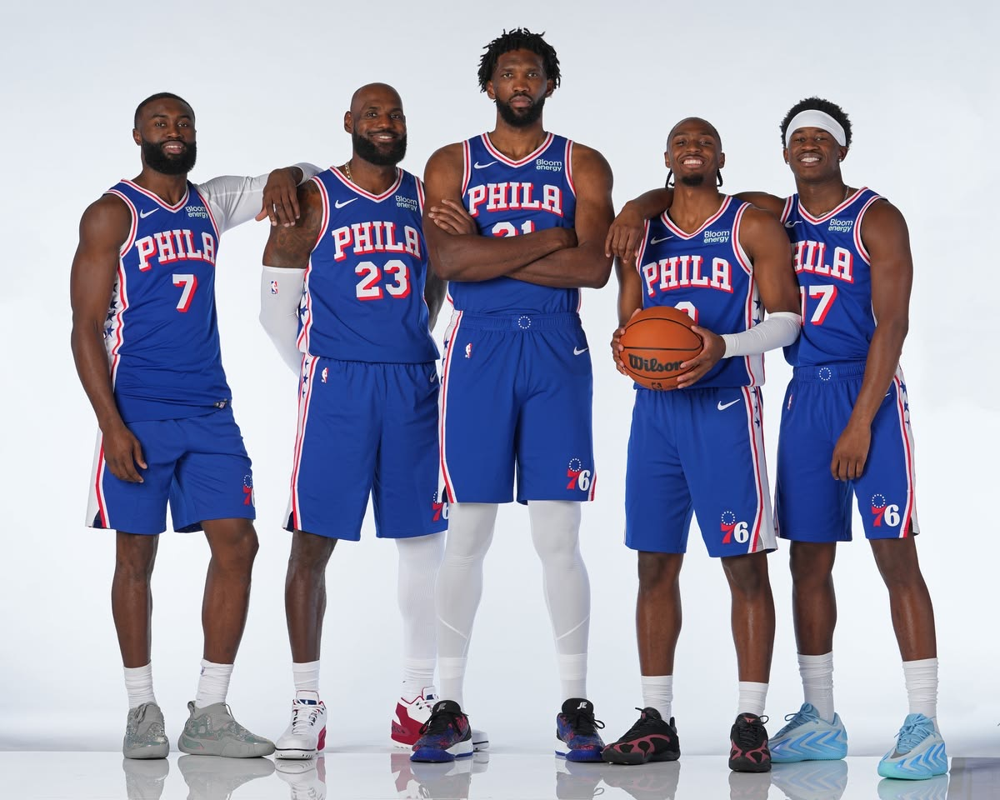
Chelsea Football Club is an English football club based in west London, with their home ground being Stamford Bridge. Founded in 1905, they are one of England's most successful clubs. In fact, they are the only team in European football history to have won every major domestic, European, and global cup/title available to them. Nicknamed as "the Blues", their fiercest rivals are Arsenal and Tottenham Hotspur.
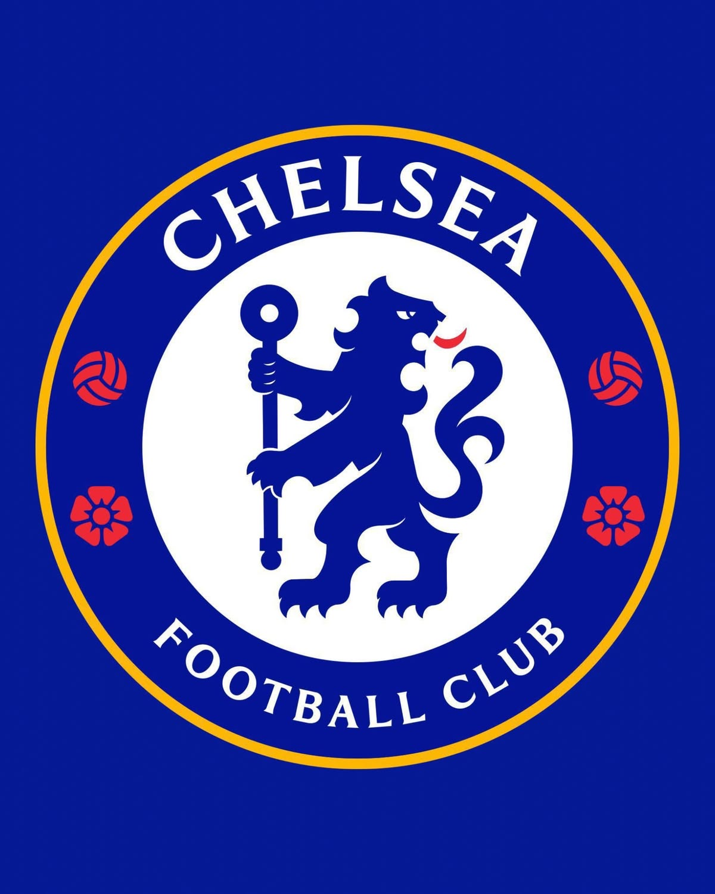
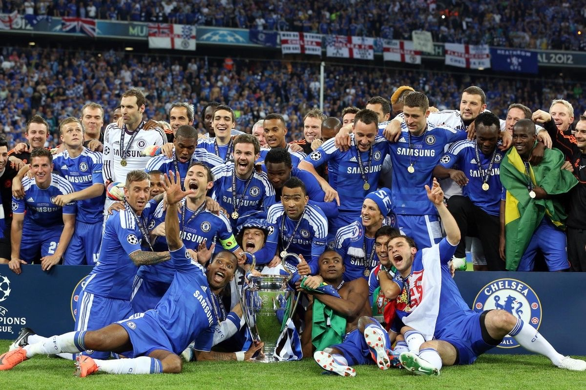
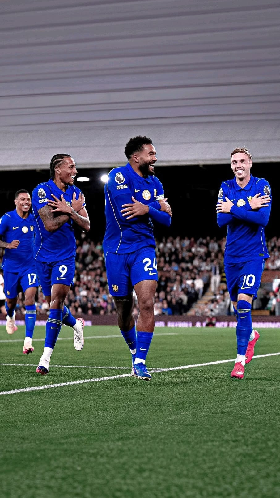
Real Madrid CF is a Spanish football club based in Madrid at the Santiago Bernabeu Stadium. Founded in 1902, they are one of the most decorated and prestigious teams in Europe. Well known for their European pedigree, they hold the record for the most UEFA Champions League titles with 15. Nicknamed as "Los Blancos" (The Whites), their biggest rivals are Atletico Madrid and Barcelona. Fun fact: they have been the most valuable football club in the world since 2022, and are valued at approximately $9.5 billion.
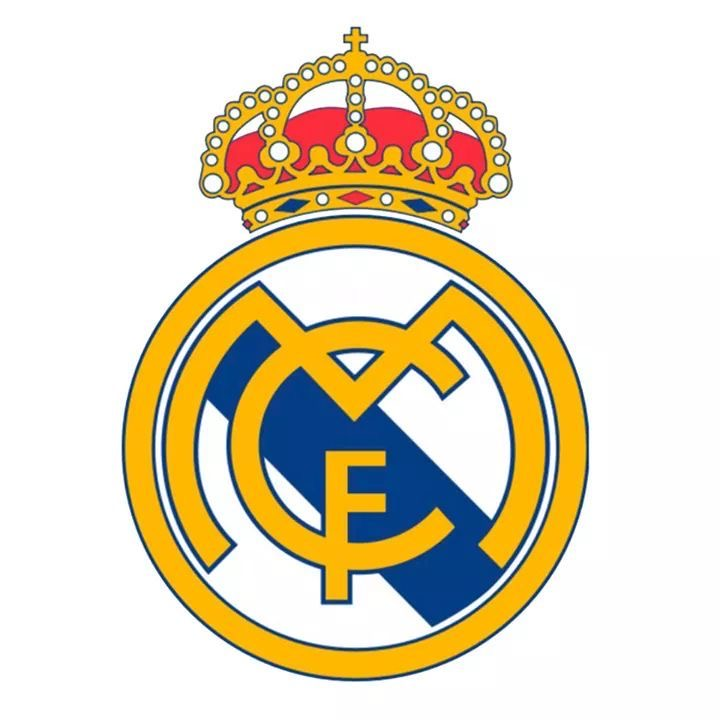
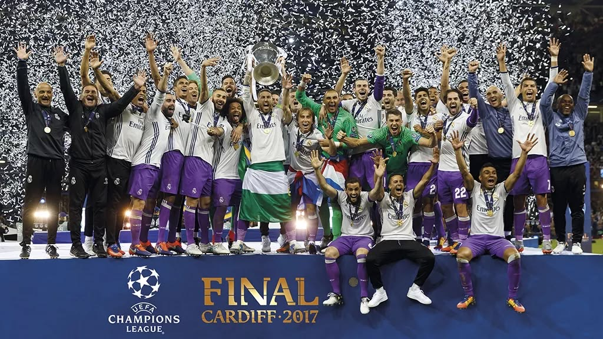
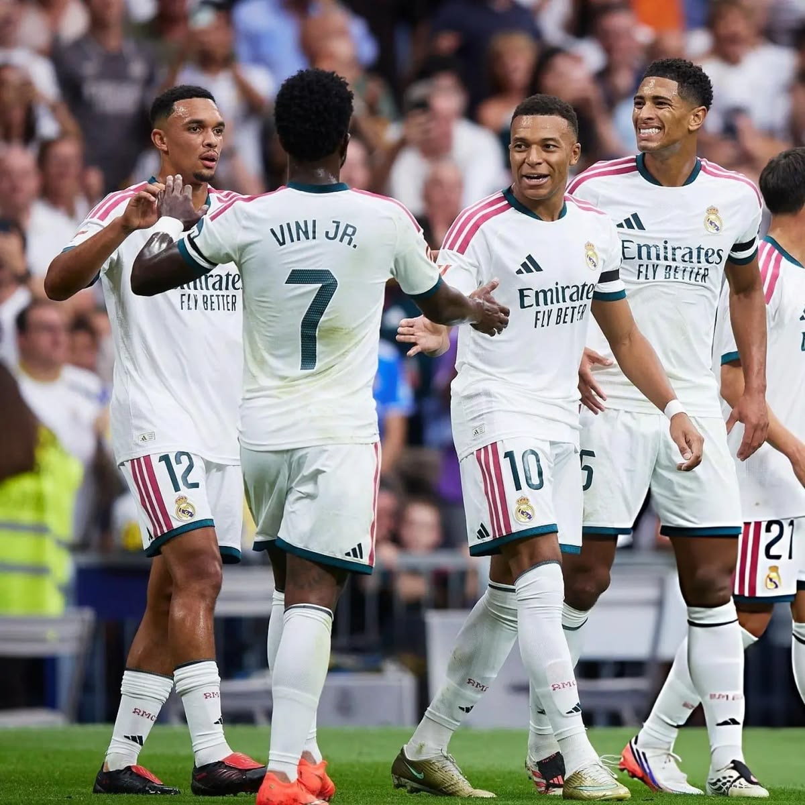